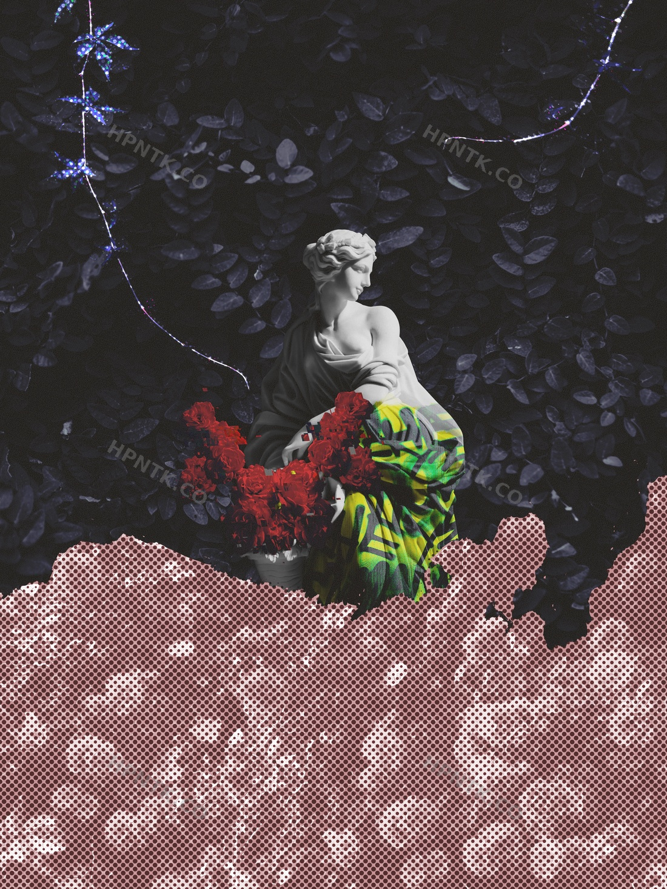

Untitled — Interruption Study
A study in interruption. Classical marble pulled through static, street color, and torn print — what happens when something already beautiful is allowed to break.
- Medium — Digital collage, archival print
- Dimensions — 18" × 24"
- Available as — Print, made to order
- Edition — Open edition
- Year — 2026